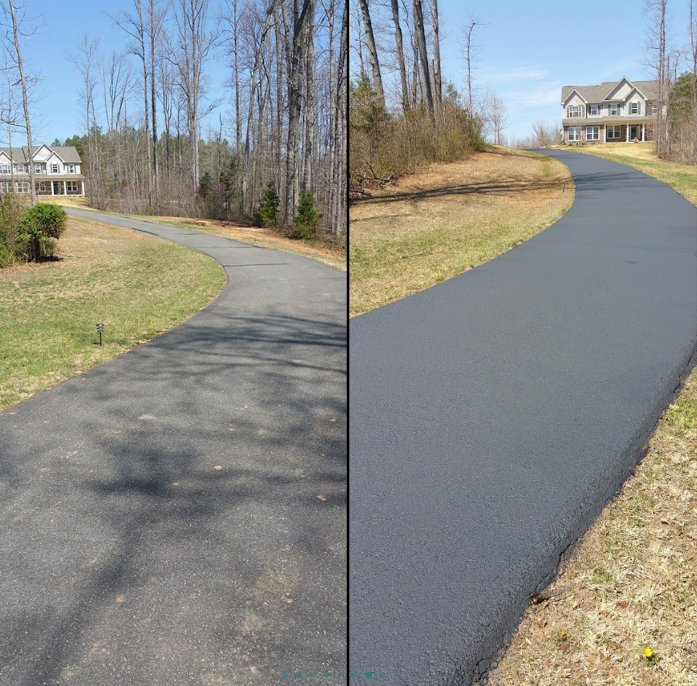
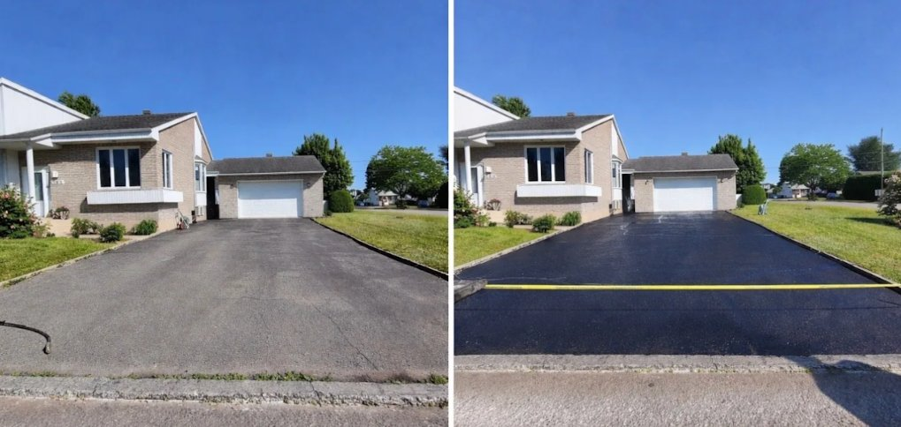
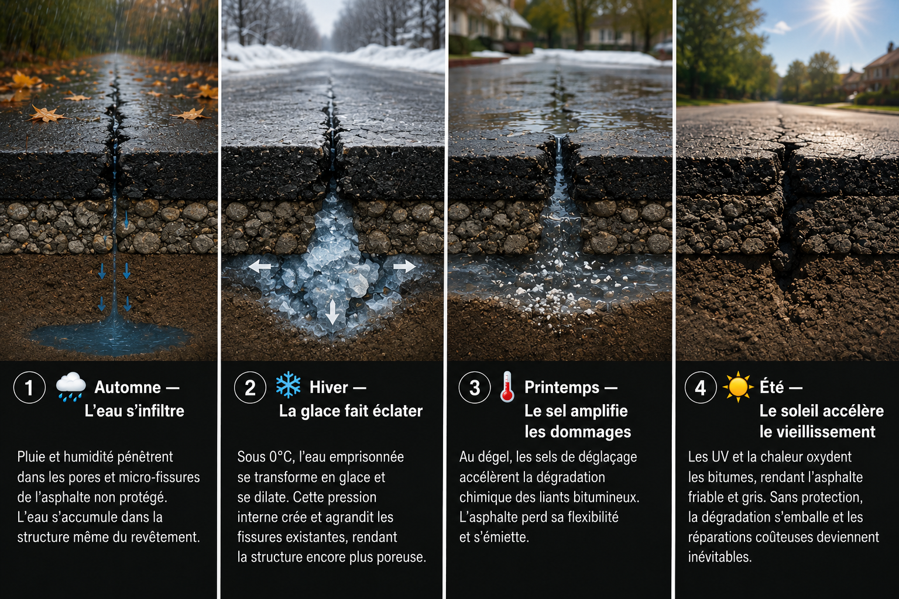

Rive-Nord · Laurentides · Lanaudière
Scellant d'asphalte professionnel
Job de qualité garantie
ou tu paies pas


Rive-Nord · Réponse rapide garantie
Job de qualité garantie
ou tu paies pas


Rive-Nord · Réponse rapide garantie
Spécialistes bitume · Rive-Nord depuis 2019
Chez Scellant-Asphalte, on protège les entrées résidentielles et stationnements commerciaux sur la Rive-Nord, les Laurentides et Lanaudière. Notre scellant à base de bitume haut de gamme pénètre dans les pores de l'asphalte, reconstitue les liants d'origine et crée une barrière imperméable qui dure réellement.
On a vu trop de propriétaires dépenser des milliers pour refaire une entrée qui aurait pu durer 10 ans de plus avec un entretien régulier. C'est pour ça qu'on fait ce qu'on fait.
Zone desservie : Blainville · Sainte-Thérèse · Saint-Eustache · Boisbriand · Mirabel · Terrebonne · Mascouche · Rosemère · Laval · Saint-Jérôme · et environs
Nettoyage complet de la surface à l'air comprimé pour maximiser l'adhésion du scellant. On retire toute la poussière, les débris et la végétation des fissures.
Les fissures sont nettoyées et remplies avec du caoutchouc liquide chauffé à haute température — le seul procédé qui scelle durablement sans que la fissure ne réapparaisse au prochain hiver.
Notre procédure garantit la saturation et l'épaisseur du scellant pour assurer sa longévité. Les découpes sont faites à la main. Résultat : une finition noire et uniforme.
Des centaines de propriétaires sur la Rive-Nord nous font confiance chaque saison.
"Mon entrée avait 6 ans et commençait à griser et à craquer. Après le traitement, elle est redevenue noire comme le premier jour. Travail propre et rapide!"
"J'avais des fissures qui s'élargissaient chaque printemps. Ils ont tout réparé et scellé en une journée. Équipe professionnelle, résultat impeccable."
"Mon asphalte de 10 ans a été rajeunie comme par magie. Je les ai déjà recommandés à trois voisins. Ponctualité et soin du détail au rendez-vous!"
On travaille sur la Rive-Nord, les Laurentides et Lanaudière. Pas certain si on couvre ta région? Appelle-nous — on se déplace souvent plus loin que prévu.
Au Québec, on compte en moyenne 80 cycles de gel-dégel par hiver. Chaque cycle est une attaque silencieuse qui détruit ton asphalte de l'intérieur — sans protection, l'eau s'infiltre, gèle, se dilate de 9 % et fait éclater la structure même du revêtement.

Refaire une entrée de garage coûte entre 5 000 $ et 15 000 $. Notre traitement, une fraction de ce prix, peut repousser ce moment de 5 à 10 ans. Les nouvelles asphaltes sont particulièrement vulnérables — les mélanges modernes ont une porosité accrue. Sceller dans les 12 à 24 premiers mois est la meilleure protection que tu puisses offrir à ton investissement.
 Conseils & Articles
Conseils & Articles
80 cycles par hiver, 9% de dilatation de la glace — voici la science complète derrière la dégradation de l'asphalte et comment notre scellant bitume bloque le processus.
Lire l'articleLa règle : tous les 2 à 3 ans avec un produit professionnel à base de bitume. Les produits du commerce en magasin big-box durent 6 à 12 mois — la différence est majeure.
Lire l'articleDe mai à septembre, avec une préférence pour juin–août. Il faut minimum 10°C et aucune pluie dans les 48 heures. N'attendez pas l'automne — l'asphalte doit sécher avant les gelées.
Lire l'articleAppelle-nous ou laisse ton adresse — on te rappelle dans la journée. Pas d'obligation, pas de pression.
Ou utilise le bouton "Estimation gratuite" ci-haut pour envoyer ton adresse directement.
Soumission 100 % gratuite · Satisfait ou vous ne payez pas · Rive-Nord & Laurentides
438-304-8896